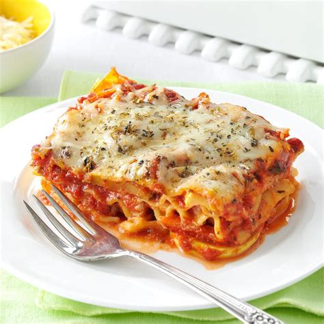

Lasagna recipe

Description
In this classic lasagna recipe, sheets of pasta are layered with a cheesy filling, a rich meaty tomato sauce, and more cheese and then baked until bubbly and browned.
While there are a few steps, this lasagna recipe is relatively easy to make and has so much flavor.
Lasagna Ingredients
- Ricotta cheese
- Pasta
- Pasta Sauce
- Beef Meat
- Onion
- Garlic
- Egg
- Parmesan
How to Make Lasagna
- Boil pasta: In a large pot of salted water boil lasagna noodles per the recipe below.
- Prepare meat sauce: Cook sausage and beef with onion and garlic. Drain well, add the pasta sauce simmer it for a few minutes to thicken.
- Combine cheese mixture: Stir the cheese mixture together in a bowl.
- Layer and bake: Layer the meat sauce and cheese mixture with lasagna noodles and bake until the top of the lasagna is golden brow
Home
<